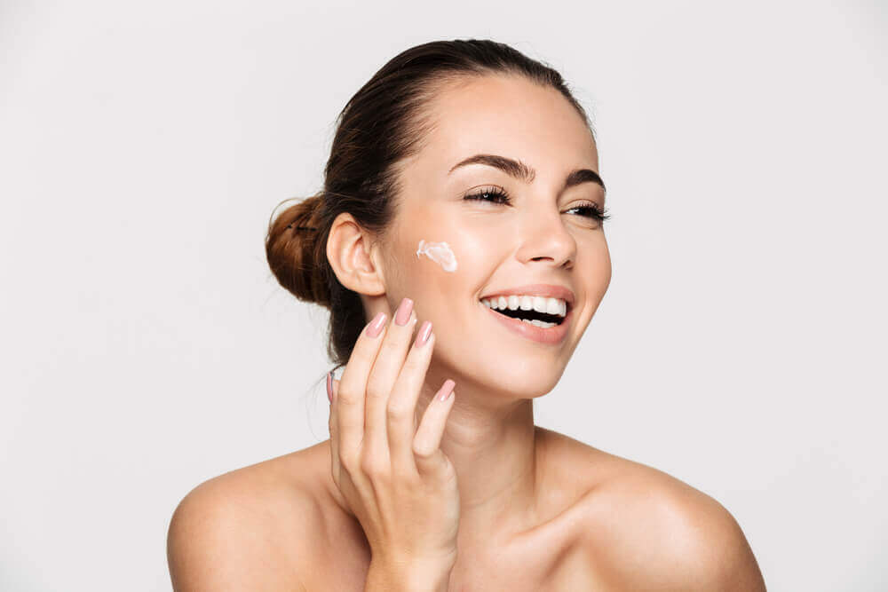
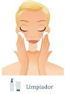
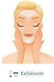

Importancia de la rutina del Cuidado Facial
Probablemente no les demasiada importancia al cuidado de tu piel, pero lo cierto es que deberías hacerlo. Una rutina de cuidado facial adecuada es esencial ya que la piel es la principal barrera protectora de nuestro cuerpo frente a las agresiones externas. La clave para mantener su resistencia es tratarla adecuadamente invirtiendo en los cosméticos adecuados
¿Por qué el cuidado?
Los productos para el cuidado deben hidratar y nutrir la piel. La hidratación no sólo incrementa el contenido en agua de la piel sino que protege y estimula la descamación ordenada (el proceso por el cual la piel desprende células muertas), dejando una percepción de piel lisa, suave y confortable. Numerosos productos para el cuidado también abordan y tratan problemas específicos.
Problemas específicos de la piel, como envejecimiento, hiperpigmentación y piel grasa con impurezas pueden tratarse eficazmente con productos para el cuidado especial que contienen una concentración elevada de ingredientes activos. Estos productos para el cuidado especial se presentan a menudo en formato de concentrado o serums.
►Aplicación de un producto para el cuidado especial: de entrada siempre suavemente sobre la piel limpia antes de la aplicación de la crema de día o de noche. Debe permitirse que los productos para el cuidado especial se absorban en la piel durante un par de minutos antes de aplicar un producto para el cuidado de día o de noche.
►Si estás utilizando un producto para el cuidado especial tenés que permitir que se absorba durante un par de minutos antes de aplicar una crema de día o de noche. Si tu piel no necesita ningún producto para el cuidado especial, la crema de día o de noche debe aplicarse directamente sobre la cara limpia.
Cómo elegir un producto apropiado para el cuidado
Los productos para el cuidado deben adaptarse a tu tipo de piel y deben abordar cualquier problema concreto que puedas tener. La elección de tu producto para el cuidado puede adaptarse también a la estación (por ejemplo, muchas personas prefieren utilizar un producto líquido más ligero en tiempos cálidos y una crema más concentrada durante los meses fríos del invierno).
Aprendé más en tipos de piel y problemas cutáneos, y efectuá nuestro test de la piel para ayudarle a determinar su propio tipo de piel. En caso de que desees consejos sobre cómo tratar un problema específico, contactá con un dermatólogo.
Leé más acerca de los productos para el cuidado de Eucerin para tipos de piel específicos en piel seca, piel sensible, piel propensa al enrojecimiento, piel grasa con impurezas, piel envejecida, piel hipersensible o piel atópica.
TODO ACERCA DE LA PROTECCIÓN SOLAR PARA LA CARA
¿Por qué proteger?
La protección solar efectiva es una parte vital del mantenimiento de una piel sana y debe considerarse siempre como parte de tu pauta diaria de cuidado facial. Mientras que unos pocos minutos al día bajo el sol ayuda a la producción sana de Vitamina D, la piel facial queda expuesta frecuentemente a varias horas de rayos UV. La sobreexposición a los rayos UV es la causa principal de envejecimiento prematuro de la piel. Por este motivo, la piel que vaya a estar expuesta debe ser protegida con un protector solar.
Modo de proteger
Varias cremas de día contienen un factor de protección solar, habitualmente un FPS de 15; sin embargo, en muchas ocasiones tu piel requerirá un factor de protección solar (FPS) más elevado, que puede aplicarse además o en lugar de tu crema de día con FPS habitual.
Los productos que contienen FPS deben aplicarse como paso final de tu rutina de cuidado de la piel matutina.
Limpieza
El modesto lavado facial. El paso esencial en toda rutina de cuidado de la piel.

Exfoliación
La exfoliación elimina de manera eficaz la acumulación de células muertas.

Mascarillas
Las mascarillas te permiten atacar problemas específicos que se presentan en tu piel.
Hidratación
La hidratación ayuda a llevar humedad al interior de nuestra piel por medio de sueros o cremas ligeras.